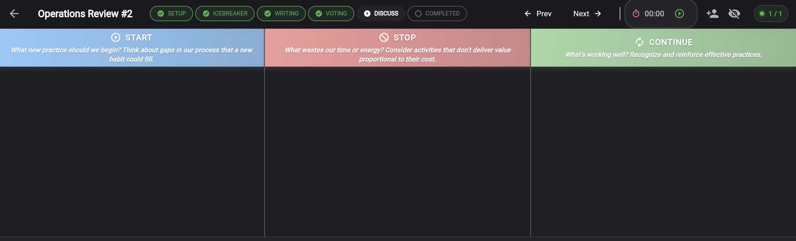
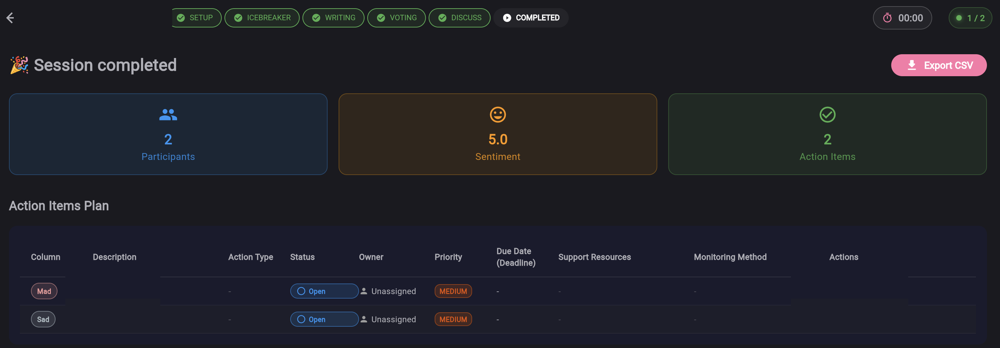
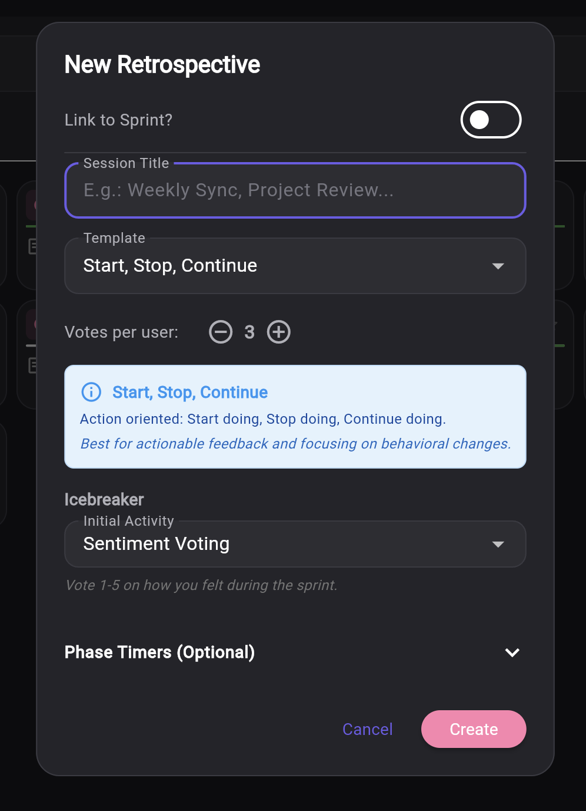

Бесплатная онлайн-доска ретроспективы для Agile-команд
Проводите структурированные ретроспективы спринта: 5 управляемых шаблонов, фазы фасилитации, анонимные отзывы и конкретные планы действий. Бесплатно для удаленных и офисных команд — без регистрации, вход через Google за секунды.
Начать бесплатно →Как это работает
Выберите шаблон ретроспективы
Выберите один из 5 проверенных форматов: Start/Stop/Continue, Mad/Sad/Glad, 4Ls, DAKI или Starfish — и настройте сессию за мгновение. Регистрация не требуется.
Обсуждайте в реальном времени
Команда пишет анонимные отзывы, голосует за приоритеты и обсуждает ключевые темы через управляемые фазы фасилитации с таймерами и айсбрейкерами.
Внедряйте изменения
Превращайте инсайты в SMART экшн-итемы с ответственными, приоритетами и сроками. Отслеживайте прогресс в Smart Todo и улучшайте процессы спринт за спринтом.
Посмотрите в действии



Почему команды выбирают Keisen для спринт-ретроспектив
5 управляемых шаблонов
Start/Stop/Continue, Mad/Sad/Glad, 4Ls, DAKI и Starfish — формат для любой потребности команды.
Управляемые фазы
Структурированный процесс: Настройка → Айсбрейкер → Написание → Голосование → Обсуждение → Итоги с таймерами фаз.
Анонимная обратная связь
Участники делятся честными, непредвзятыми отзывами без раскрытия личности. Психологическая безопасность встроена.
SMART экшн-итемы
Создавайте задачи с ответственными, приоритетами, сроками и SMART-подсказками. Отслеживайте в Smart Todo.
Agile Coach
AI-помощник с контекстными советами, вопросами для обсуждения и лучшими практиками фасилитации.
Отслеживание настроения
Мониторьте моральный дух команды. Отслеживайте тренды и оценивайте, приводят ли экшн-итемы к реальным улучшениям.
Работает на мобильных
Полностью адаптивный на смартфонах, планшетах и десктопах. Участвуйте в ретроспективах с любого устройства — без установки приложения.
5 шаблонов ретроспективы для любых целей
Start / Stop / Continue
Самый популярный формат. Помогает команде понять, какие практики внедрить, от каких привычек отказаться и что оставить.
Идеально для: команд, которые только начинают, или для быстрых обзоров.
Mad / Sad / Glad
Формат, основанный на эмоциях. Выявляет скрытые проблемы и разочарования, помогая построить здоровую атмосферу.
Идеально для: сложных спринтов и построения эмпатии.
4Ls (Liked, Learned, Lacked, Longed For)
Liked (Понравилось), Learned (Узнал), Lacked (Не хватало), Longed For (Хотелось бы). Сбалансированный анализ спринта.
Идеально для: глубокого анализа и поиска возможностей для обучения.
DAKI (Drop, Add, Keep, Improve)
Drop (Бросить), Add (Добавить), Keep (Оставить), Improve (Улучшить). Фокус на конкретных процессных изменениях.
Идеально для: улучшения процессов и четких планов действий.
Морская звезда (Starfish)
Пятимерный детальный анализ: Больше, Меньше, Оставить, Начать, Закончить. Самый глубокий формат ретроспективы.
Идеально для: опытных команд и детального анализа процессов.
Всё необходимое для эффективных ретроспектив
- 5 проверенных шаблонов с фасилитацией для любых нужд команды
- Структурированные фазы обеспечивают продуктивность и соблюдение таймбокса
- Полная анонимность на этапе написания для максимально честной обратной связи
- Айсбрейкеры для разогрева команды перед началом обсуждения
- Система голосования для определения самых важных тем для обсуждения
- Экшн-итемы с ответственными, приоритетами и SMART-целями — управляйте ими в Smart Todo
- Agile Coach overlay с контекстными советами и лучшими практиками фасилитации
- Мониторинг настроения команды (Sentiment) для отслеживания морального духа
- Встроенные таймеры фаз помогают держать фокус и не затягивать встречу
- Интеграция с данными из Agile Process для контекстного обсуждения спринтов
- Работа в реальном времени для распределенных и удаленных команд
- Вход через Google — без регистрации, без кредитной карты, без ограничений
- Работает в браузере на любом устройстве — смартфон, планшет или десктоп — никакого софта устанавливать не нужно
- Экспорт результатов ретроспективы в CSV для отчетности и архивирования
- Бесплатная альтернатива EasyRetro, GoRetro, TeamRetro, Miro и Parabol
Совмещайте ретроспективы с Estimation Room для оценки стори-поинтов и Матрицей Эйзенхауэра для управления приоритетами.
Часто задаваемые вопросы
Какие шаблоны ретроспектив доступны?
Keisen предлагает 5 управляемых шаблонов: Start/Stop/Continue (определите, что начать, прекратить и продолжить), Mad/Sad/Glad (выразите эмоции по поводу спринта), 4Ls (Liked, Learned, Lacked, Longed For), DAKI (Drop, Add, Keep, Improve) и Starfish (More of, Less of, Keep, Start, Stop). Каждый шаблон включает управляемые фазы и поддержку фасилитации.
Доска ретроспективы действительно бесплатна?
Да, доска ретроспективы Keisen полностью бесплатна и не требует регистрации. Войдите через Google и начните первую ретроспективу за секунды. Вы можете создавать ретроспективы, приглашать команду, собирать анонимные отзывы, голосовать и отслеживать экшн-итемы — всё бесплатно.
Нужна ли регистрация или создание аккаунта?
Длительная регистрация не требуется. Просто войдите через Google-аккаунт — и вы готовы. Никаких форм, подтверждения email или кредитной карты. Ваша первая ретроспектива может начаться менее чем через минуту.
Как работают управляемые фазы?
Каждая ретроспектива проходит через структурированный поток: Настройка (конфигурация сессии), Айсбрейкер (разогрев команды), Написание (анонимный сбор идей), Голосование (приоритизация тем), Обсуждение (фасилитированная беседа) и Завершение (экшн-итемы и итоги). Таймеры фаз помогают держать сессию в рамках таймбокса.
Могу ли я проводить ретроспективу с удаленной командой?
Да, Keisen создан для удаленных, распределенных и гибридных команд. Это веб-инструмент, работающий в любом браузере без установки ПО. Участники присоединяются по ссылке, пишут анонимные отзывы, голосуют и работают над экшн-итемами в реальном времени — идеально для команд в разных локациях и часовых поясах.
Можно ли писать отзывы анонимно?
Да, фаза написания полностью анонимна. Участники делятся честными, непредвзятыми отзывами без раскрытия личности. Это создает психологическую безопасность и поощряет открытое общение, делая ретроспективы более продуктивными, где каждый чувствует себя комфортно.
Какой формат ретроспективы лучше для удаленных команд?
Все 5 шаблонов отлично подходят для удаленных и распределенных команд. Структурированные фазы (Айсбрейкер, Написание, Голосование, Обсуждение) поддерживают вовлеченность независимо от локации. Start/Stop/Continue и Mad/Sad/Glad популярны для быстрых спринт-ретроспектив, а DAKI и Starfish предлагают более глубокий и структурированный анализ.
Можно ли отслеживать экшн-итемы из ретроспектив?
Да, Keisen включает мощную систему экшн-итемов. На фазе обсуждения вы создаете задачи с ответственными, приоритетами, сроками и SMART-подсказками. Экшн-итемы можно управлять в инструменте Smart Todo для отслеживания и контроля выполнения между спринтами.
Как работает функция Agile Coach?
Agile Coach — это AI-помощник, который предоставляет контекстные советы, вопросы для обсуждения и лучшие практики фасилитации во время ретроспективы. Он предлагает релевантные вопросы в зависимости от выбранного шаблона и текущей фазы, помогая Scrum-мастерам и тимлидам проводить более продуктивные сессии — даже если они новички в фасилитации.
Чем Keisen отличается от EasyRetro, GoRetro, TeamRetro или Miro?
Keisen узкоспециализирован для agile-ретроспектив: управляемые фазы фасилитации, встроенные таймеры, анонимные отзывы, SMART экшн-итемы, айсбрейкеры и помощник Agile Coach — всё полностью бесплатно и без регистрации. В отличие от универсальных досок типа Miro, каждая функция создана специально для проведения эффективных ретроспектив. В отличие от EasyRetro или GoRetro, Keisen включает 5 шаблонов с полной поддержкой фасилитации и интеграцией с Agile Process Manager для контекста спринтов.
Можно ли отслеживать настроение команды?
Да, Keisen включает функцию отслеживания настроения (sentiment), которая мониторит моральный дух и благополучие команды между ретроспективами. Вы видите тренды, выявляете закономерности и оцениваете, приводят ли экшн-итемы к реальным улучшениям в удовлетворенности команды и непрерывном совершенствовании.
Работает ли доска ретроспективы на мобильных устройствах?
Да, Keisen полностью адаптивен и работает на смартфонах, планшетах и десктопах. Участвуйте в ретроспективах с любого устройства — без установки приложения. Интерфейс автоматически адаптируется к размеру экрана для оптимального удобства использования.
Можно ли экспортировать результаты ретроспективы?
Да, результаты ретроспективы можно экспортировать в формате CSV для дальнейшего анализа, отчетности или архивирования. Экспорт включает все отзывы, результаты голосования и экшн-итемы, обеспечивая полную прослеживаемость и документирование.
Что такое Agile-ретроспектива?
Agile-ретроспектива (также называемая спринт-ретроспектива или просто "ретро") — это структурированная командная встреча, проводимая в конце каждого спринта или итерации. Определённая в Scrum Guide, её цель — проанализировать, как прошёл последний спринт с точки зрения людей, отношений, процессов и инструментов — и определить действенные улучшения для следующего спринта.
Концепция непрерывного улучшения через регулярную рефлексию уходит корнями в японскую философию Кайдзен и была формализована в гибкой разработке программного обеспечения Agile-манифестом (2001), который гласит: "Команда регулярно размышляет о том, как стать более эффективной, а затем соответствующим образом корректирует своё поведение."
Норм Керт ввёл структурированные форматы ретроспектив в своей книге 2001 года Project Retrospectives, сформулировав Главную Директиву: "Независимо от того, что мы обнаружим, мы понимаем и искренне верим, что каждый сделал лучшее, на что был способен." Сегодня ретроспективы практикуются тысячами agile-команд по всему миру как краеугольный камень непрерывного улучшения и командного обучения.
Исследуйте другие инструменты Keisen
Готовы улучшить свою команду?
Начните проводить эффективные ретроспективы — бесплатно, без регистрации.
Начать бесплатно →